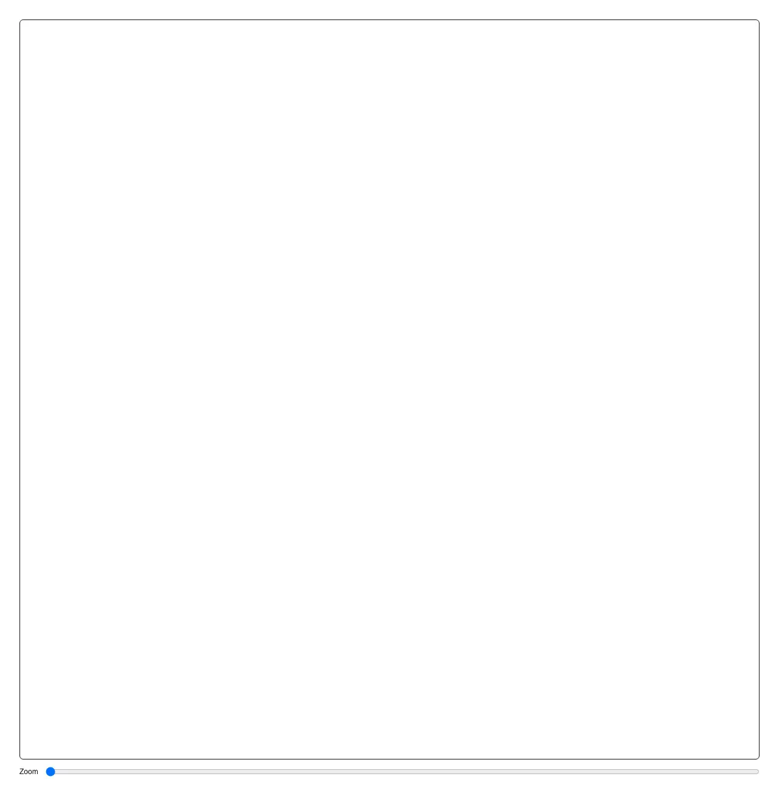

The step that comes straight after a photo is chosen: the picture sits behind a frame of the shape the product needs, and you drag it about and pinch or scroll to zoom until the right part is in the window. Reach for it wherever an upload has to end up a fixed shape — a profile photo or avatar, a team or workspace logo, a cover or banner image, an OG/social preview card, a product or listing photo, a thumbnail for a video or article, a group or channel icon, an ID or document photo being squared up before it is sent, a header image in a CMS, and the crop step of any onboarding or import wizard. Common asks it answers: "image crop react", "image cropper component", "avatar cropper", "profile picture crop react", "crop image before upload", "react-easy-crop alternative", "react-image-crop alternative", "cropperjs alternative", "shadcn image crop", "shadcn avatar upload", "crop to square react", "circular crop avatar", "zoom and pan image react", "pinch to zoom crop", "canvas drawImage crop", "get cropped image as blob", "cropped image is offset", "crop is off by a few pixels", "crop coordinates wrong scale", "image rotated after upload", "photo sideways after crop", "exif orientation canvas", "createImageBitmap imageOrientation", "canvas blank on iphone", "canvas too large ios safari", "resize image in browser before upload", "createObjectURL memory leak", "canvas toBlob securityerror", "tainted canvas crop", "accessible image cropper", "crop image keyboard only", "画像 クロップ react", "アバター 切り抜き", "アップロード 前に リサイズ", "写真が横向きになる exif". Official shadcn/ui has nothing to build this from, and the measurement is not close: fetching every entry in its registry today — 63 listed, 62 fetchable, questionnaire is indexed and 404s on both style tracks — and grepping 212 KB of source, crop, naturalWidth, FileReader, createImageBitmap, drawImage, getContext, toDataURL, toBlob, imageOrientation, exif, devicePixelRatio, createObjectURL, setPointerCapture, pinch and the string <canvas are every one of them a zero hit. The only match for zoom anywhere is eleven occurrences of Tailwind's zoom-in-95 / zoom-out-95 overlay animation on dialogs and menus. Its aspect-ratio component is a six-line re-export of the Radix primitive that holds a box at a shape and knows nothing about a picture inside it, and avatar renders an image that has already been made square by somebody else. So an agent asked for a crop step builds it from a bare canvas, and the three things that make this hard are exactly the three it gets wrong. The first is that the coordinates on screen are not the coordinates being cut. A drag is measured in CSS pixels on a 320px-wide preview; the crop is taken from an 8000px original, and the factor between them has to be applied exactly once, in one direction. Applied the wrong way or against a frame width measured before a sidebar opened, the saved picture is offset from the one that was on screen — close enough to ship and wrong enough to notice. This keeps the value in the source image's own pixels ({ x, y, width, height }), so the crop survives a resize, a phone with a different screen and a round trip through a database, and derives the screen geometry from it rather than the other way round. The frame is measured with a ResizeObserver rather than once on mount, because a dialog or a sidebar changes its width without the window doing anything. The second is EXIF orientation, and it produces the bug report everybody recognises: the preview is the right way up and the saved avatar is lying on its side. A phone stores the photo in the sensor's orientation with a tag saying which way to turn it; browsers have applied that tag to <img> for years and drawImage of the same file has not always agreed, so the picture rotates somewhere between the box that was cropped and the canvas it was cut into. createImageBitmap(blob, { imageOrientation: "from-image" }) is the line that settles it, and here the result is checked against the preview before it is trusted — if the bitmap and the element disagree about which side is the long one, the element wins, because being faithful to what the user actually chose beats being upright. The third is that the output is otherwise unbounded. The obvious way to cut a rectangle out is a canvas the size of the source: for an 8000x6000 photo that is 48 megapixels, 192 MB of RGBA before anything is drawn, and the destination is a 256px avatar. iOS Safari does not throw there — it drops the backing store and hands back a blank image, or kills the tab. So the canvas is made at the size of the output and the crop is scaled into it in a single drawImage with high-quality smoothing, never allocating more than the picture actually wanted. Pass output={{ width: 512 }} for a slot you have to fill, or leave it and the longest side is capped at 2048; a crop is never upscaled, which would only make a bigger file out of the same detail. It is operable without a pointer, which is the part hand-rolled croppers skip and the reason a sign-up step becomes one a whole class of people cannot finish. The frame takes focus and answers the arrow keys (Shift for a longer step) and + / -, and under it are real range inputs — zoom, plus a horizontal and a vertical position that announce themselves as percentages — with the position pair sr-only until something in it has focus, so a screen reader always reaches them while a sighted keyboard user sees them appear only on tabbing in rather than facing two sliders that duplicate the arrow keys. Pointer capture keeps a drag alive past the edge of the frame, two-finger pinch zooms about the point between the fingers, a wheel zooms about the cursor through a non-passive listener (React's own wheel handler is passive, where preventDefault does nothing and the page scrolls behind the cropper), touch-action is none so the first drag on a phone does not scroll the page instead, and the browser's native image drag is turned off so a pan does not hand the file to whatever is underneath. The API: src takes a URL or the File/Blob straight from the input — pass the Blob when you have one, and the object URL is made and revoked for you, which is the leak every upload screen has. Then aspect, shape="round" to draw the frame as a circle (the export stays the rectangle: an avatar is displayed round by the page that shows it, and baking the circle in means a transparent PNG that grows black corners the first time something flattens it), maxZoom, grid, controls, disabled, crossOrigin, and labels for translation. value/defaultValue and onChange work controlled or uncontrolled over the crop rectangle, and onChangeEnd fires once a gesture settles — the one to re-encode a preview in, since onChange fires per pointer frame. The ref exposes getCrop, setCrop, reset, getImageSize, toCanvas, toBlob and toDataURL. coverCrop, clampCrop, cropZoom, zoomCropTo and outputSize are exported as pure functions, so the same rectangle can be re-cut on a server that has no DOM. There are deliberately no resize handles: free-form selection with eight grips is a different component doing a different job, and the frame here is the output shape. Within pulld it completes the upload path: file-dropzone takes the file in, this shapes it, upload-list shows the rows while it goes up. It sits beside image-comparison, which puts two pictures of the same thing under one divider, and signature-pad, the other component here that draws. One file, zero dependencies, not even an icon, and every colour is a shadcn token except the thirds guides, which are a translucent white on purpose because what they lie on is a photograph rather than a themed surface. Light and dark follow on their own.

Rendered on the shadcn default neutral palette with harness-generated props.
pnpm dlx shadcn@4.21.0 add @pulld/image-crop
| licence | POINTER |
|---|---|
| primitive base | none |
| type | registry:ui |
| files | src/components/ui/image-crop.tsx |
| npm deps pulled | none beyond the pre-installed peer set |
| registry deps | — |
| semantic / palette / hex | 6 / 4 / 0 |
| writes shared ui/ | yes — can overwrite the project’s own primitives |